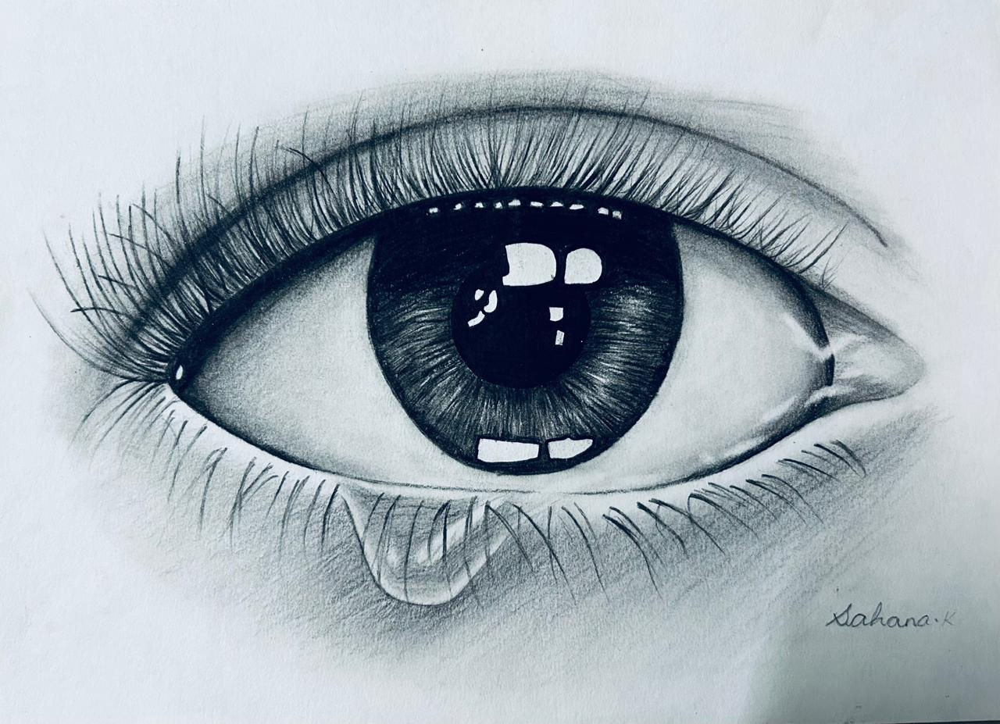
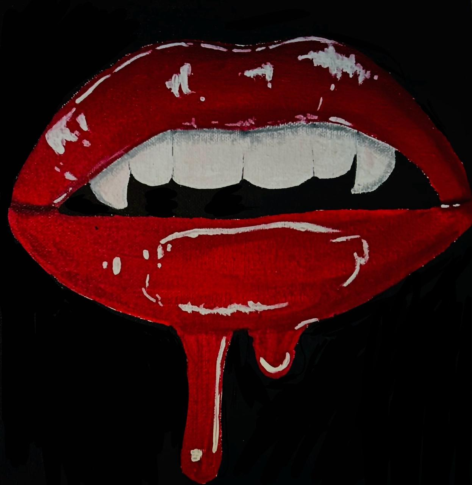
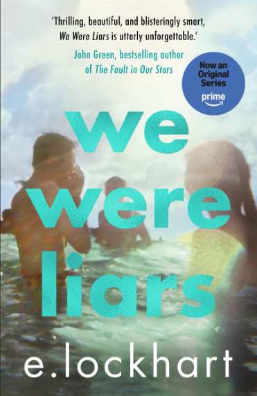
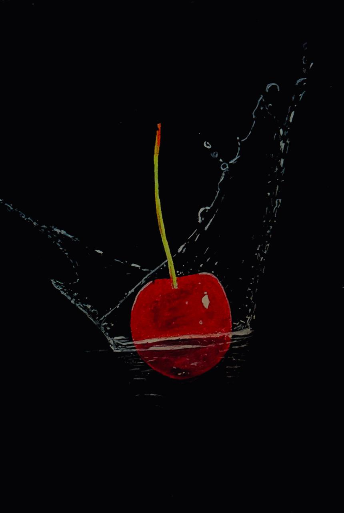

Chrysalis High
Class 10 Board Examination
88%initializing curiosity...
AI & DATA SCIENCE · REVA UNIVERSITY
I'm Sahana Kirubakaran — a curious coder, creative thinker and aspiring software developer exploring the space where technology meets creativity.
BETWEEN CODE & CANVAS
Technology teaches me how to build. Creativity teaches me what to build.
I’m currently pursuing B.Tech in Artificial Intelligence and Data Science at REVA University. I enjoy programming, problem-solving and turning ideas into practical projects — but my identity doesn't stop at code.
Reading, arts & crafts, anchoring and public speaking keep my creative side alive. I’m learning to bring both sides together: structured thinking with imagination.
AI · Data Science · Python · C++ · SQL · IoT · Problem Solving
Arts · Crafts · Reading · Anchoring · Communication · Expression
THE ROAD SO FAR
Class 10 Board Examination
88%Class 12 Board · PCMC
90% 96% in PCMCB.Tech · Artificial Intelligence & Data Science
Code more. Build more. Become industry-ready.
∞SKILL UNIVERSE
THINGS I'VE BUILT
A working model exploring IoT, automation and robotics to create a smart food-serving experience.
Repository ↗A digital concept focused on organized healthcare information and efficient management.
View details ↗A student-focused concept for tracking study habits, productivity and learning routines.
View details ↗A structured system concept for organizing and managing student information efficiently.
Repository ↗An academic exploration of a centralized university portal for organized access to e-resources.
Read report ↗An academic exploration of applying reverse engineering to understand a local community problem.
Read report ↗BEYOND THE SCREEN
Hover or tap a community to discover what it represents in my journey.
THE OTHER SIDE OF THE SCREEN
When I'm not coding, you'll probably find me reading, making, sketching, experimenting or simply chasing a new idea.

CREATIVITY / 01

ARTS & CRAFTS / 02

Reading helps me slow down, wonder more and keep learning beyond a syllabus.

CREATIVE EXPRESSION / 03
CURRENTLY BECOMING
THE STORY IS JUST BEGINNING.
My next chapter is about turning curiosity into capability — one line of code, one project and one new experience at a time.
LET'S BUILD SOMETHING INTERESTING.
I'm always open to learning, collaborating and meeting people who are curious about technology and creativity.
“Curiosity is my favorite programming language.”